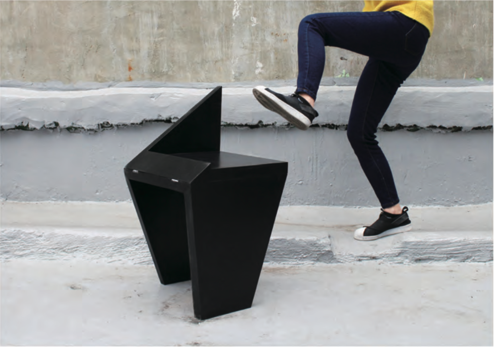

Kicking chair, 2017, category, material.

Plywood, Knitting wool, 400 x 400 x 720 mm, 2017
Nowadays, in your daily life, you can easily see how you want to burst out without feeling stressed or depressed. In Korea, we call the ‘cost of starving’ which refers to the money that is used improvisedly, the ‘stupid cost’ which refers to when the money that can not be used due to carelessness such as the transfer fee, and the ‘lonely cost’ which means the money that was spent to appease the loneliness.
In summary, we can see that the 20s are holding the stress and emotion inside, and they want to burst immediately, and it can be seen that the solution method is small and playful rather than aggressive.
This chair reflects emotion and contains ‘the act of releasing emotion’, with the asymmetrical form. The asymmetrical form was used to put ‘The act of releasing emotion kicking culpably’ in the chair. It was started from a chair for ‘releasing my emotion’ but will finally turns into a design for user who wants emotional relief.